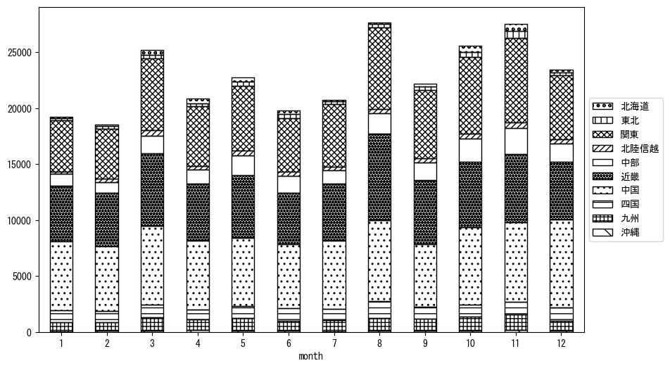

-
トップ
-
岡山県
岡山県
１．延べ宿泊者（総数）の推移
時系列グラフ
図１：岡山県内の従業員数100人以上の宿泊施設での延べ宿泊者数（国外、居住地不詳を含む総数）。
基本統計量
表１：従業員数100人以上の宿泊施設での延べ宿泊者の総数（国外、および居住地不詳を含む）に関する基本統計量。単位は人泊。平均は１か月あたりの平均値を表す。図１に対応。
| 2008年 |
36,872 |
5,279 |
30,614 (12月) |
45,825 (8月) |
| 2009年 |
36,043 |
6,827 |
27,515 (1月) |
51,175 (8月) |
| 2010年 |
27,898 |
5,947 |
19,536 (12月) |
40,143 (8月) |
| 2011年 |
24,842 |
4,310 |
18,396 (2月) |
32,655 (8月) |
| 2012年 |
30,398 |
5,137 |
23,601 (1月) |
37,646 (11月) |
| 2013年 |
34,306 |
5,791 |
25,157 (2月) |
44,789 (8月) |
| 2014年 |
33,486 |
5,382 |
26,883 (2月) |
42,195 (11月) |
| 2015年 |
36,953 |
5,915 |
26,870 (1月) |
46,189 (8月) |
| 2016年 |
36,995 |
5,140 |
28,746 (2月) |
45,889 (8月) |
| 2017年 |
37,390 |
5,509 |
28,011 (2月) |
46,523 (8月) |
| 2018年 |
33,709 |
4,946 |
27,302 (1月) |
41,458 (3月) |
| 2019年 |
33,385 |
6,673 |
22,007 (2月) |
41,121 (3月) |
| 2020年 |
18,718 |
9,964 |
2,568 (5月) |
30,764 (11月) |
| 2021年 |
14,828 |
7,522 |
6,281 (6月) |
29,370 (12月) |
| 2022年 |
19,427 |
6,674 |
9,894 (2月) |
28,466 (8月) |
| 2023年 |
24,056 |
3,281 |
19,796 (1月) |
29,801 (3月) |
２．宿泊者数の重心（年平均の推移）
図２：岡山県内の従業員数100人以上の宿泊施設での宿泊者数（国外、居住地不詳を除く）の重心（年平均の推移）。
全画面表示
重心の前年平均からの移動距離と方位、および緯度・経度
表２：重心の前年平均からの移動距離と方位、および緯度・経度。図２に対応。
| 2008年 |
— |
— |
34.9965 |
135.4319 |
| 2009年 |
南東 |
4.0km |
34.9757 |
135.4675 |
| 2010年 |
東北東 |
27.7km |
35.0558 |
135.7551 |
| 2011年 |
東 |
17.4km |
35.0321 |
135.9438 |
| 2012年 |
西 |
5.0km |
35.0389 |
135.8895 |
| 2013年 |
西南西 |
8.0km |
35.0016 |
135.8149 |
| 2014年 |
東北東 |
14.9km |
35.0426 |
135.9702 |
| 2015年 |
北東 |
4.4km |
35.0703 |
136.0051 |
| 2016年 |
北西 |
2.9km |
35.0865 |
135.9803 |
| 2017年 |
東 |
10.5km |
35.1034 |
136.0931 |
| 2018年 |
南南西 |
3.8km |
35.0718 |
136.0767 |
| 2019年 |
西南西 |
4.9km |
35.0579 |
136.0261 |
| 2020年 |
西南西 |
40.8km |
34.9353 |
135.6047 |
| 2021年 |
東 |
4.5km |
34.9388 |
135.6540 |
| 2022年 |
東北東 |
40.0km |
35.0402 |
136.0741 |
| 2023年 |
北東 |
24.9km |
35.1768 |
136.2914 |
運輸局別延べ宿泊者数
時系列（年平均）
図３：岡山県内の従業員数100人以上の宿泊施設での１か月あたり平均宿泊者数（国外、居住地不詳を除く）の運輸局別内訳。
寄与度（前年からの変化率に対する）
図４：岡山県内の従業員数100人以上の宿泊施設での運輸局別宿泊者数（国外、居住地不詳を除く）から求めた寄与度。
３．宿泊者数の重心（月別）
図５：岡山県内の従業員数100人以上の宿泊施設での宿泊者数（国外、居住地不詳を除く）の重心（月別）。観測期間は2008年1月から2023年12月まで。
全画面表示
全期間（2008年1月～2023年12月）の平均と月別平均の比較
表３：全期間の平均から月別平均までの移動距離と方位、および緯度・経度。図５に対応。
| 全期間 |
— |
— |
35.0390 |
135.8799 |
| 1月 |
西南西 |
22.9km |
34.9369 |
135.6619 |
| 2月 |
西南西 |
18.8km |
34.9699 |
135.6924 |
| 3月 |
北 |
2.5km |
35.0613 |
135.8844 |
| 4月 |
北西 |
3.7km |
35.0655 |
135.8551 |
| 5月 |
東北東 |
1.8km |
35.0462 |
135.8974 |
| 6月 |
西 |
10.1km |
35.0279 |
135.7696 |
| 7月 |
南 |
4.7km |
34.9975 |
135.8724 |
| 8月 |
南南東 |
6.9km |
34.9794 |
135.9019 |
| 9月 |
東 |
12.4km |
35.0565 |
136.0144 |
| 10月 |
北東 |
20.3km |
35.1486 |
136.0584 |
| 11月 |
東北東 |
28.7km |
35.1694 |
136.1524 |
| 12月 |
西南西 |
8.2km |
35.0090 |
135.7984 |
運輸局別延べ宿泊者数
月別平均（2008年1月～2023年12月）

図６：岡山県内の従業員数100人以上の宿泊施設での宿泊者数（国外、居住地不詳を除く）の運輸局別内訳（月別）。
寄与度（全期間の平均から月別平均への変化率に対する）
図７：岡山県内の従業員数100人以上の宿泊施設での運輸局別宿泊者数（国外、居住地不詳を除く）から求めた寄与度（月別）。
４．データのダウンロード
出典：観光庁「宿泊旅行統計調査」に収録された「施設所在地、居住地別延べ宿泊者数（従業員数100人以上の施設）」
国土地理院「白地図（地理院タイル）」（図２と図５）